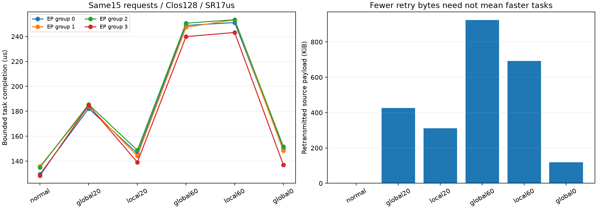

共享上行故障：恢复收益与剩余空间
128端点Clos · 15份不同真实R1路由 · 四EP32组 · 两层两个Decode步 · 各rank batch=1 · SR初始超时17µs
20µs收敛延迟：成熟本地改路让最晚任务185.464→148.750µs，收回故障额外等待约73.88%。
60µs收敛延迟：少重传237,208B，最晚任务反而晚2.831µs。
这是共享交换机上行的真实断链仿真；4µs断开128–132链路后不再上线。不是前一轮GPU32短时DATA黑洞，也不是物理硬件实验。local即时本地响应和global0即时全局响应都是声明的理想参考。

同一输入下的结果
| 条件 | 最晚任务µs | 物理排空µs | 重传B | 丢失事件 | DATA | ACK |
|---|
| normal | 135.773 | 151.868 | 0 | 0 | 0 | 0 |
| global20 | 185.464 | 217.305 | 435,848 | 64 | 30 | 31 |
| local20 | 148.750 | 148.750 | 318,208 | 46 | 15 | 27 |
| global60 | 250.670 | 250.670 | 945,944 | 136 | 50 | 83 |
| local60 | 253.501 | 279.254 | 708,736 | 101 | 15 | 81 |
| global0 | 151.700 | 151.700 | 121,176 | 15 | 15 | 0 |
global20/60：断链后20/60µs才全局改路；local20/60：额外立即剔除两端自己的坏出口；global0：断链时全局改路。所有条件可靠重传均已开启。最晚任务与网络排空分别记录。
为什么本地改路还不够？
ToR128有其他可用上联；Agg132对16个GPU原本只有一个下跳，剔除后暂时无候选，仍会丢弃DATA、ACK及其他控制包。本地剔除不生成新绕路。1,371,072B正常DATA实际经过这条链路，涉及四组。
少重传，为什么更慢？
追踪local60最后的70→10 Combine消息：ready晚1,249ns，交换机驻留增加1,765ns，ACK跨度不变；减去它在global60原有183ns余量，恰好得到最终2,831ns退化。后续正常数据在共享端口重新竞争，包含group1对group2的排队占用。
研究空间如何判断？
20µs条件已有方法解决约73.88%额外等待，不能把全部提升算成新方法。与正常相比剩余12.977µs是参考差距，未证明都可消除。60µs条件说明控制路径、阶段依赖和竞争时序必须一起看。下一步先补足更完整的已有绕路基线，再验证利用MoE实际未完成贡献分配恢复资源的候选；当前没有新协议收益结论。
详细解释 · 全部结果 · 逐包证据 · 独立原始核验
限制：声明计算、功能标记数据、固定片段；未校准硬件，未验证完整R1、Prefill、满载或生产p99。五新网络各一次，正常样本只读复用。HTML仅作静态资源核对。